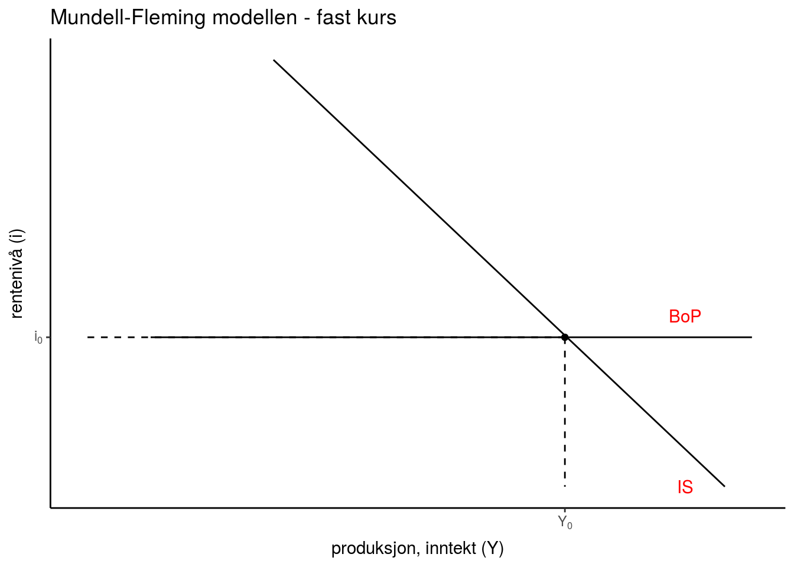
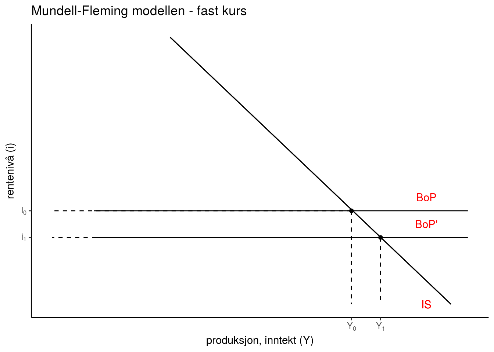
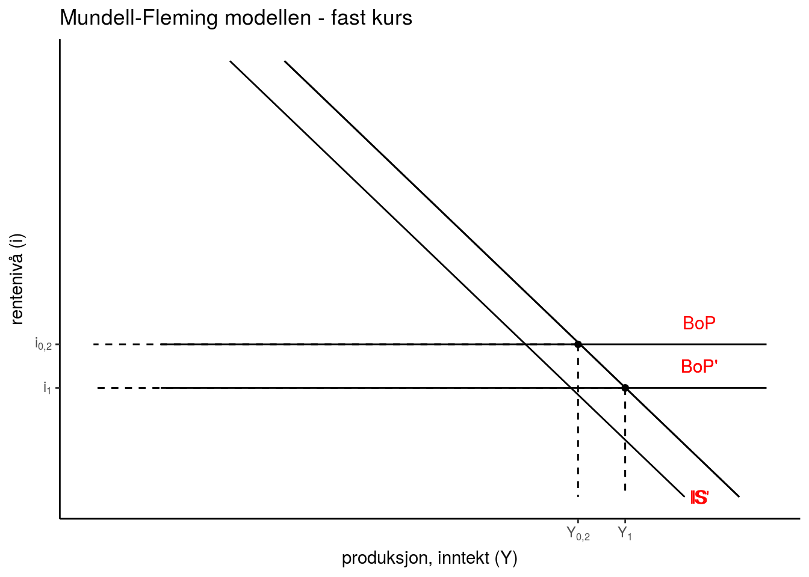
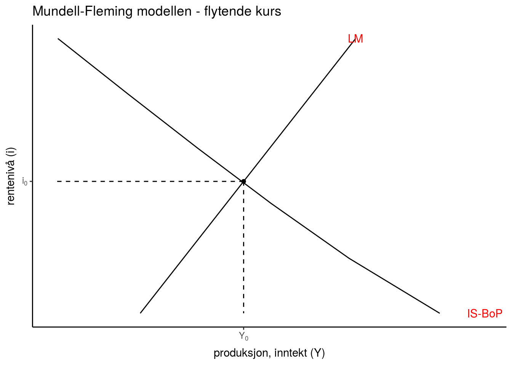
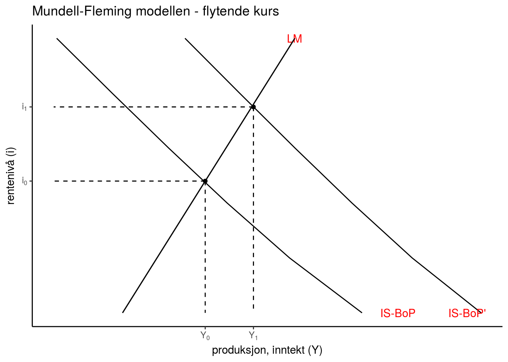
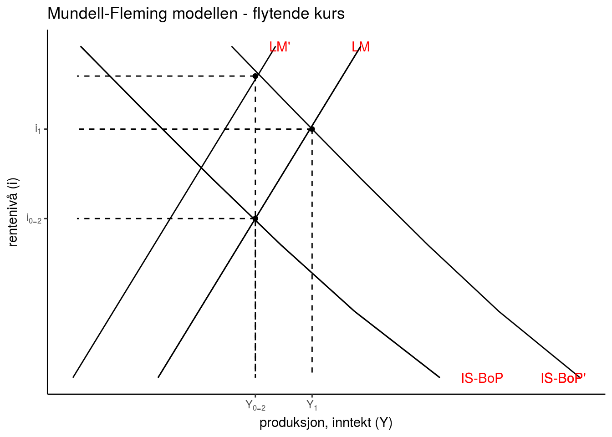

\[(Y-\overline{Y})=0\]
\[AE \equiv C+I+G+NX\] \(NX\) er nå inkludert i definisjonen for aggregert etterspørsel
NX er definert som eksport \((EX)\) minus import \((R\cdot IM)\) målt i enheter av det innenlandske godet:
\[NX=EX−R\cdot IM \text{ }\] Realvalutakursen \(R=\frac{E\cdot P^{*}}{P}\) (prisforholdet mellom utenlandske og innenlandske goder målt i enheter av det innenlandske gode) sørger her for at alt blir målt i enheter av det innenlandske godet.
Renteparitetsbetingelsen
\[(1+i_{t+1})=(1+i_{t+1}^{*})\frac{E_{t+1}^{e}}{E_{t}}\] Likevektsbetingelse som forteller oss at den forventede avkastningen er lik mellom å investere i inn- og utland.
Her er \(i_{t+1}\) innelandsk avkastning, \(i_{t+1}^{*}\) utenlands avkastning, \(E_{t}\) er (nominelle) prisen i dag per énhet av utenlandsk valuta og \(E_{t+1}^{e}\) den forventede valutakursen én periode frem i tid.
\[BP = CA + CU + OR=0\]
\(CU=\text{Driftsregnskapet}\).
Består av nettoeksport (NX), pluss nettofinansinntekter(aksjer og obligasjoner) og nettoverføringer
\(CA=\text{Kapitalregnskapet}\)
Nettoendringer i fordringer og gjeld ovenfor utlandet
\(OR=\text{Endringer i sentralbankens valutareserver}\)
Vil øke (reduseres) dersom fastkursprisen er svakere (sterkere) enn det som markedet er villig til å betale
Husholdningene import (\(IM\)) av utenlandske goder er gitt ved
\[IM= -m_{1}R + m_{2}Y \]
Bedriftenes eksport (\(EX\)) av innenlandske goder er gitt ved
\[EX=x_{1}R + x_{2}Y^{*} \]
Ved å sett inn for uttrykkene ovenfor, kan vi skrive nettoeksporten som
\[NX = EX - R\cdot IM = x_{1}R + x_{2}Y^{*} - R\cdot (m_{1}R + m_{2}Y)\]
Legger til grunn i dette kurset at priseffekten dominerer innteksteffekten (Marshall-Lerner betingelsen ):
\[\frac{\Delta NX}{\Delta R}= \underset{priseffekt}{x_{1}} - \underset{inntektseffekt}{IM} + \underset{priseffekt}{m_{1}R} > 0 \\ \text{ (i dette kurset antar vi at dette holder, men i praksis vil det ta litt tid)}\]
Myndighetene kan velge mellom fast eller flytende kurs:
Anser markedsaktørene faskursregimet som troverdig, har vi at \(E=E^{e} \Rightarrow rp=0\)
\[E=\frac{(1+i^{*})}{(1+i)}E^{e}\]
Viser den samtidige likevekten i gode-, penge- og valutakursmarkedet under fast kurs
\[Y = \frac{1}{1-c(1-t) + R\cdot m_{2}} \left [ \overline{C} + \overline{I} - b\cdot \overline{i} + \overline{G} + EX \\ + R^{2}\cdot m_{1} \right]\]
\[kY -hi = \overline{M}/P\]
\[i =i^{*} + rp\]
Formelt
\[\frac{\Delta Y}{\Delta \overline{i}} =\left[\frac{-b}{1-c(1-t) + R\cdot m_{1}}\right ] < 0 \text{ :IS-kurven}\]
\[i =i^{*} + rp \text{ BoP-kurven}\]
Grafisk


Eks. reduksjon i offentlig utgifter (\(\overline{G}<0\))

Merk: Under fast kurs er renta bundet til å holde fastkursen stabil, det gjør at finanspolitikk (endring i offentlige utgifter og skatter) står igjen som de eneste virkemdlene til å stabillisere konjunktursvingnigene
Viser den samtidige likevekten i gode-, penge- og valutakursmarkedet under flytende kurs.
\[Y = \frac{1}{1-c(1-t) + R\cdot m_{2}} \left [ \overline{C} + \overline{I} - b\cdot \overline{i} + \overline{G} + EX \\ + R\cdot m_{1} \right]\]
\[kY -hi = \overline{M}/P\]
\[E=\frac{(1+i^{*})}{(1+i)}E^{e}\]
For å lette den grafisk analysen, ønsker vi å finne et uttrykk som gir oss den samtidige likevekten i valuta- og godemarkedet. Vi starter først med å skrive (på generell form) den nominelle valutakursen som \(E=E(\underset{(-)}{i},\underset{(+)}{i^{*}},\underset{(+)}{E^{e}})\). Setter vi så denne funksjonen inn i definisjonen for realvalutakursen får vi
\[R=\frac{E(i,i^{*},E^{e})\cdot P^{*}}{P}=R(\frac{P^{*}}{P},i,i^{*},E^{e})\]
Ved å sette det generelle utryyket for \(R\) inn likevektsbetingelsen for godemarkedet, finner vi den samtidige likevekten i gode- og valutakursmarkedet:
\[Y = \frac{1}{1-c(1-t) + R(\frac{P^{*}}{P},i,i^{*},E^{e}) \cdot m_{2}} \left [ \overline{C} + \overline{I} \\ - b\cdot \overline{i} + \overline{G} + EX(R\Big(\frac{P^{*}}{P},i,i^{*},E^{e}\Big)) + R(\frac{P^{*}}{P},i,i^{*},E^{e})\cdot m_{1} \right]\]
Dersom Marhsall-Lerner betingelsen holder, er det mulig å vise (ikke pensum i dette kurset) at IS-BoP-kurven (flytende kurs) er slakere enn IS-kurven (fast-kurs)
Formelt
\[\underset{IS-BoP-kurven ( flytende-kurs)}{\frac{\Delta Y}{\Delta \overline{i}}} < \underset{IS-kurven (fast-kurs)}{\frac{\Delta Y}{\Delta \overline{i}}} < 0 \]
Grafisk
Viser den samtidige likevekten i gode-, penge- og valutakursmarkedet (flytende kurs)

Økning i offentlige utgifter (\(\overline{G}>0\))

Eks. reduksjon i pengmengden (\(\overline{M}<0\))

Merk: I motsetning til under fastkurs, har man under flytende kurs muligheten til å benytte pengepolikken til å stabilisere konjunktursvingningne. I Norge i dag er dette rådende pengepoltiske regimet, mens vi på 90-tallet og i etterkrigserioden praktiserte ulike former for fastkursregimer (ovenfor veid snitt av europeiske valutaer).